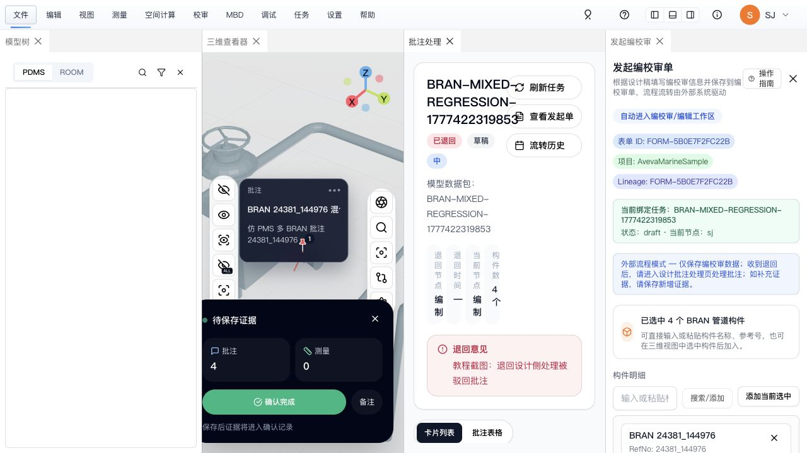
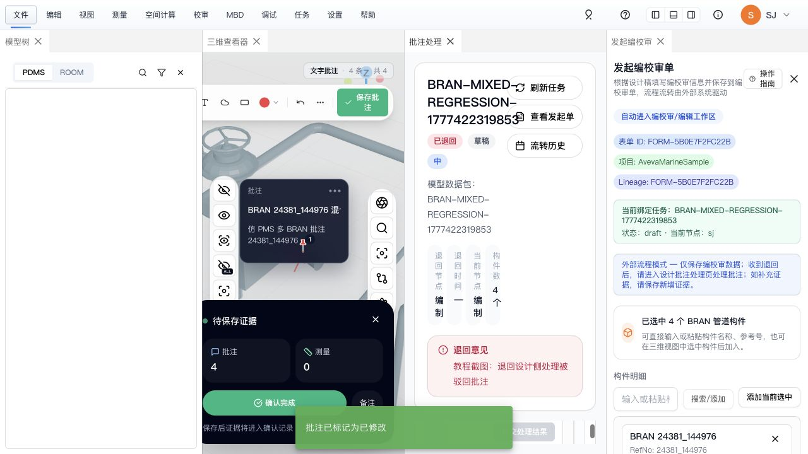
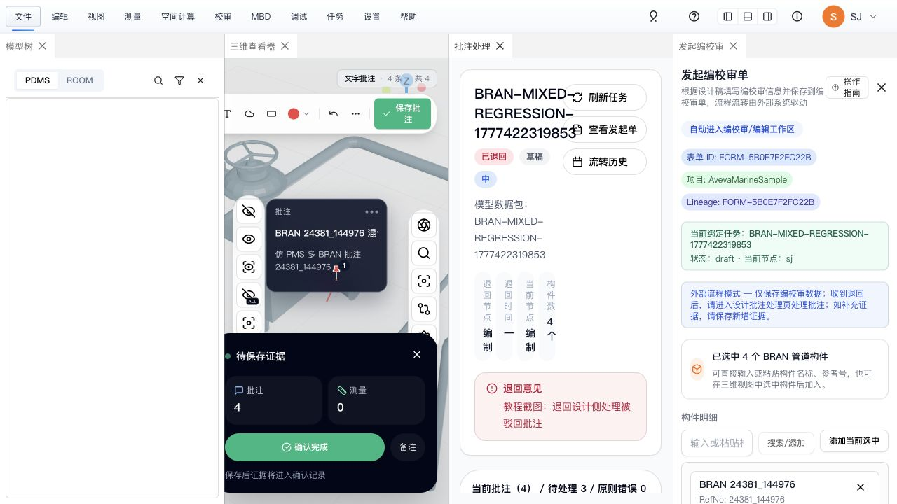
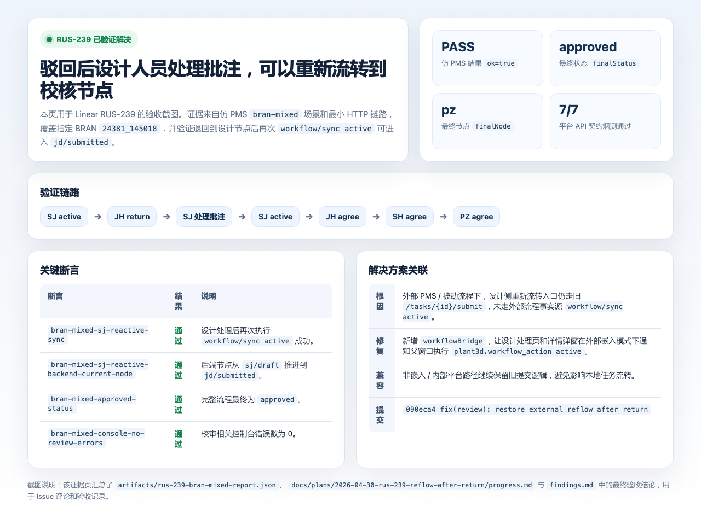

RUS-239 Issue 截图场景还原
由于当前 Linear 页面需要登录，无法直接读取 Issue 原始附件。以下截图按 RUS-239 描述还原同一业务状态： 编校审单被驳回到设计节点，设计人员处理批注后重新流转。还原素材来自既有仿 PMS 自动化截图和本轮 Cursor Browser 验收截图。 为避免左侧模型树资源缺失带来的干扰，本页裁切聚焦右侧批注处理、退回意见和流转结果区域。
Issue 场景设计侧收到退回单据
单据回到 sj/draft，页面展示“已退回”和退回意见，设计人员进入批注处理区域。

Issue 场景提交批注处理结果
设计人员将退回批注标记为“已修改”，页面出现处理成功提示，进入“已修改待确认”状态。

Issue 场景处理后准备重新流转
返回列表后可见处理进度。RUS-239 修复前，外部 PMS 场景的重新流转入口可能仍走旧内部 submit。

修复后重新流转已验证通过
修复后外部嵌入模式通过父窗口桥接执行 workflow/sync active，仿 PMS bran-mixed 最终通过到 approved / pz。

对应解决方案：新增 workflowBridge，让 DesignerCommentHandlingPanel.vue 与
TaskReviewDetail.vue 在外部被动流程下通知父窗口执行 plant3d.workflow_action active。
修复提交：090eca4 fix(review): restore external reflow after return。左侧模型树为空来自样本资源
e3d_world_sites.parquet 缺失，已裁切为非关注区域。